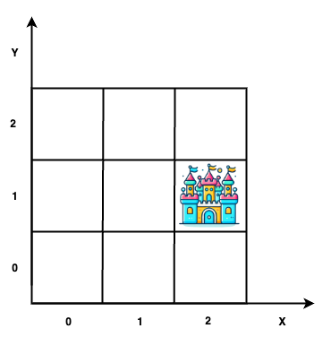
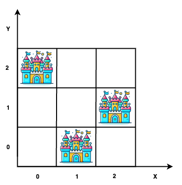
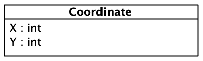
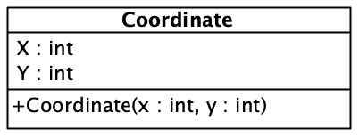
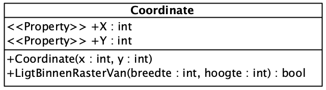
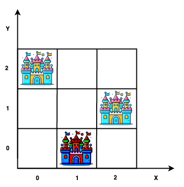
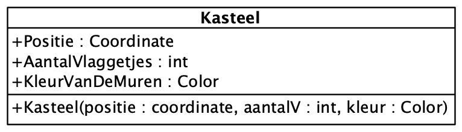
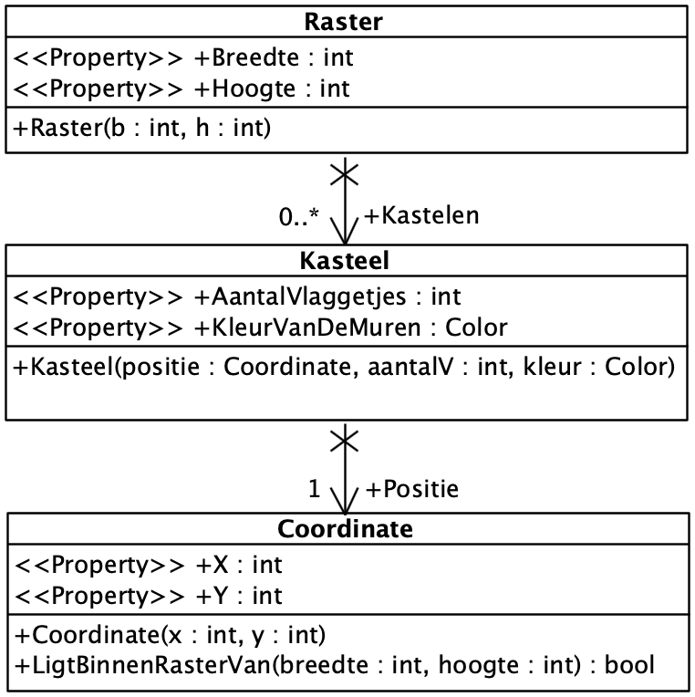
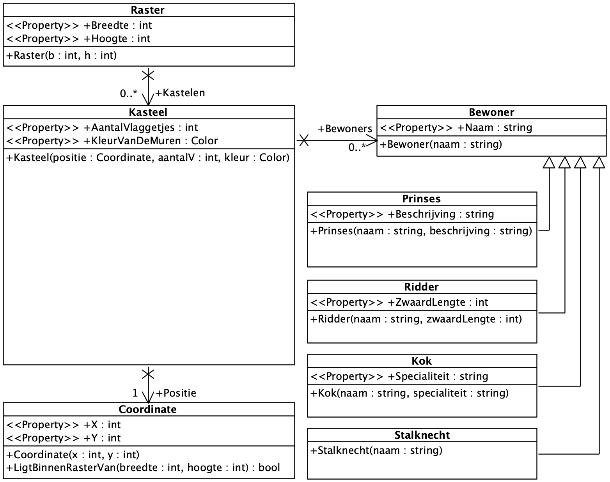
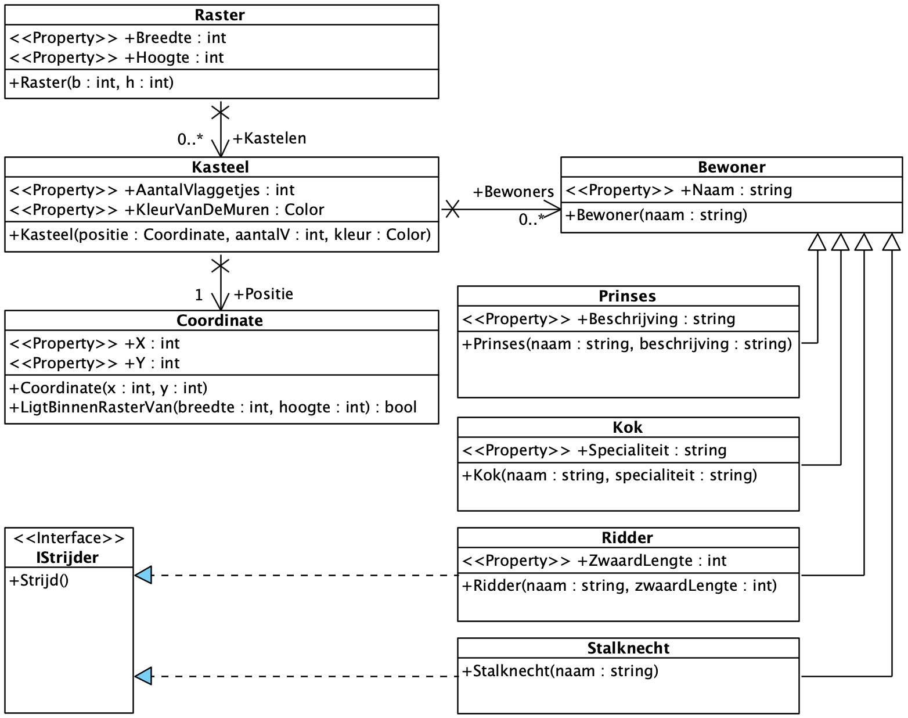

Herhaling OO - Klassen, Objecten & Relaties
Deze les herneemt de belangrijkste objectgeoriënteerde bouwstenen uit het vorige semester. We behandelen de syntax niet opnieuw als volledig nieuwe leerstof. We bouwen stap voor stap een klein domein en staan vooral stil bij de ontwerpkeuzes.
| Gebruik deze les als diagnostische herhaling. Wanneer de basis snel terugkomt, kan je meer tijd investeren in de toepassing op het einde. |
Waarom klassen gebruiken?
We hebben in .NET toegang tot elementaire datatypes zoals int, string, double en bool. In combinatie met controlestructuren zoals if, switch en lussen kunnen we daarmee nagenoeg alle denkbare problemen oplossen.
Toch ontstaat al snel de behoefte om datatypes te definiëren die eigen zijn aan het probleemdomein. Denk bijvoorbeeld aan coördinaten in een systeem dat informatie op een raster presenteert.
Beschouw onderstaand raster. Het kasteel bevindt zich op positie (2,1).

We kunnen die informatie bijhouden met losse variabelen.
int rasterBreedte = 3;
int rasterHoogte = 3;
int positieKasteelX = 2;
int positieKasteelY = 1;Dit werkt voor één kasteel. Bij meerdere kastelen groeit de hoeveelheid losse, onderling gerelateerde data snel.

int positieKasteel1X = 0;
int positieKasteel1Y = 2;
int positieKasteel2X = 1;
int positieKasteel2Y = 0;
int positieKasteel3X = 2;
int positieKasteel3Y = 1;De X- en Y-waarde vormen samen één concept: een coördinaat. We maken dat concept expliciet met een klasse.
Klasse en object

Een klasse beschrijft welke gegevens en welk gedrag een bepaald soort object heeft.
| Een klasse is zoals een bouwplan. Een object is het concrete ding dat volgens dat plan werd gemaakt. Met hetzelfde bouwplan kunnen meerdere objecten worden gemaakt. |
We definiëren een eerste versie van Coordinate.
public class Coordinate
{
public int X { get; set; }
public int Y { get; set; }
}Met new maken we een object of instantie van die klasse.
var positieKasteel1 = new Coordinate { X = 0, Y = 2 };
var positieKasteel2 = new Coordinate { X = 1, Y = 0 };Beide objecten zijn gemaakt op basis van dezelfde klasse, maar hebben een eigen identiteit en toestand.
- Toestand
-
De verzameling van de huidige waarden van de properties van een object.
- Identiteit
-
Het ene object blijft een ander object dan het andere, ook wanneer hun properties toevallig dezelfde waarden bevatten.
Constructor
Een constructor maakt duidelijk welke gegevens nodig zijn om een object te maken.

public class Coordinate
{
public int X { get; init; }
public int Y { get; init; }
public Coordinate(int x, int y)
{
X = x;
Y = y;
}
}Het gebruik wordt compacter en de vereiste waarden kunnen niet worden vergeten.
var positieKasteel1 = new Coordinate(x: 0, y: 2);
var positieKasteel2 = new Coordinate(x: 1, y: 0);
var positieKasteel3 = new Coordinate(x: 2, y: 1);
Je kan de parameter naam gebruiken om een waarde mee te geven in de constructor/methode (x: 0). Hiermee kan je code beter leesbaarder maken voor jezelf en collega’s: new Coordinate(x: 0, y: 2) vs new Coordinate(0, 2).
|
init en private set
Beide onderstaande properties kunnen van buiten de klasse worden gelezen, maar niet op dezelfde manier worden gewijzigd.
public int X { get; init; }
public int AantalVlaggetjes { get; private set; }get; init;-
De waarde kan tijdens de constructie worden ingesteld. Daarna kan ze niet meer met een gewone toekenning worden veranderd. Dit past bij informatie die na creatie vastligt.
get; private set;-
Alleen code binnen de klasse kan de waarde na constructie nog veranderen. Dit past bij toestand die via gedrag van de klasse evolueert.
Bijvoorbeeld:
public class Kasteel
{
public Coordinate Positie { get; init; }
public int AantalVlaggetjes { get; private set; }
public Kasteel(Coordinate positie, int aantalVlaggetjes)
{
Positie = positie;
AantalVlaggetjes = aantalVlaggetjes;
}
public void HangVlagBij()
{
AantalVlaggetjes++;
}
}De positie ligt vast na constructie. Het aantal vlaggetjes kan wijzigen, maar alleen via gedrag dat door Kasteel wordt aangeboden.
init is niet automatisch beter dan private set. Kies op basis van de vraag of de toestand na constructie nog legitiem kan veranderen.
|
Gedrag
Een klasse kan behalve gegevens ook logica bevatten. Logica die inherent bij het concept hoort, noemen we vaak het gedrag van de klasse.
We zouden Coordinate kunnen laten controleren of de positie binnen gegeven grenzen ligt.
public bool LigtBinnenRasterVan(int breedte, int hoogte)
{
return X >= 0
&& X < breedte
&& Y >= 0
&& Y < hoogte;
}Deze oplossing kan werken, maar is niet de enige mogelijke ontwerpkeuze. We hebben nog geen klasse die het raster zelf voorstelt. Zodra die bestaat, kan het gedrag daar misschien natuurlijker terechtkomen.
Encapsulatie en abstractie
Encapsulatie schermt de interne toestand en implementatie van een klasse af. In C# gebruiken we daarvoor onder meer public, private en protected.
In UML worden de meest gebruikte visibility-symbolen als volgt genoteerd:
-
-voorprivate; -
+voorpublic; -
#voorprotected.

De buitenwereld mag een publieke methode gebruiken, maar hoeft de implementatiedetails niet te kennen. Dat is abstractie.
Door toestand en gedrag samen te brengen, kan de klasse haar eigen regels bewaken. Wanneer implementatiedetails toch overal gekend moeten zijn, spreken we van een leaky abstraction.
Een rijker concept: Kasteel
Een coördinaat vertelt alleen waar iets staat. Ons probleemdomein bevat kastelen met een positie, een kleur en een aantal vlaggetjes.

We maken ook de mogelijke kleuren expliciet.
public enum KasteelKleur
{
Grijs,
Blauw,
Rood
}Vervolgens definiëren we Kasteel.
public class Kasteel
{
public Coordinate Positie { get; init; }
public KasteelKleur Kleur { get; init; }
public int AantalVlaggetjes { get; private set; }
public Kasteel(
Coordinate positie,
KasteelKleur kleur,
int aantalVlaggetjes)
{
Positie = positie;
Kleur = kleur;
AantalVlaggetjes = aantalVlaggetjes;
}
public void HangVlagBij()
{
AantalVlaggetjes++;
}
}Een zelf gedefinieerde klasse kan dus het datatype van een property zijn. Een Kasteel heeft een Coordinate als positie.

Het Raster
We willen niet langer losse variabelen voor breedte en hoogte gebruiken. Daarom introduceren we het raster als een volgend domeinconcept.
public class Raster
{
public int Breedte { get; init; }
public int Hoogte { get; init; }
public Raster(int breedte, int hoogte)
{
Breedte = breedte;
Hoogte = hoogte;
}
public bool Bevat(Coordinate coordinate)
{
return coordinate.X >= 0
&& coordinate.X < Breedte
&& coordinate.Y >= 0
&& coordinate.Y < Hoogte;
}
}We hebben nu twee mogelijke ontwerpen gezien.
coordinate.LigtBinnenRasterVan(breedte, hoogte);
raster.Bevat(coordinate);In het tweede ontwerp kent Raster zijn eigen grenzen en bezit het dus alle informatie om de vraag te beantwoorden. Coordinate blijft onafhankelijk van het concept raster.
| Er is bij softwareontwerp niet altijd exact één juiste oplossing. Plaats gedrag waar een andere developer het verwacht, kies een klasse die over de nodige informatie beschikt en blijf consistent binnen het domein. |
In deze cursus kiezen we voor raster.Bevat(coordinate). In de volgende les benoemen we deze redenering als Information Expert.
Associaties
Een programma bestaat uit samenwerkende objecten. Een Domain Class Diagram of DCD brengt de relevante klassen, properties, methoden en hun associaties in kaart.
Het raster moet zijn kastelen beheren. Dit is een associatie met multipliciteit 0..*: een raster kan geen, één of meerdere kastelen bevatten.

De meest voorkomende multipliciteiten zijn:
1-
Exact één object.
0..1-
Geen of één object.
*-
Eén of meerdere objecten.
0..*-
Geen, één of meerdere objecten.
Een collectie encapsuleren
Een eerste implementatie zou een publieke lijst kunnen aanbieden.
public List<Kasteel> Kastelen { get; set; } = new();Aanroepende code kan dan rechtstreeks wijzigingen uitvoeren.
raster.Kastelen.Add(kasteel);
raster.Kastelen.Clear();Raster krijgt daardoor geen kans om zijn eigen regels te bewaken. We schermen de wijzigbare lijst af en bieden een gerichte methode aan.
public class Raster
{
private readonly List<Kasteel> _kastelen = new();
public int Breedte { get; init; }
public int Hoogte { get; init; }
public IReadOnlyList<Kasteel> Kastelen => _kastelen.AsReadOnly();
public Raster(int breedte, int hoogte)
{
Breedte = breedte;
Hoogte = hoogte;
}
public bool Bevat(Coordinate coordinate)
{
return coordinate.X >= 0
&& coordinate.X < Breedte
&& coordinate.Y >= 0
&& coordinate.Y < Hoogte;
}
public void VoegKasteelToe(Kasteel kasteel)
{
ArgumentNullException.ThrowIfNull(kasteel);
if (!Bevat(kasteel.Positie))
throw new ArgumentException("Het kasteel ligt buiten het raster.", nameof(kasteel));
var positieIsBezet = _kastelen.Any(bestaandKasteel =>
bestaandKasteel.Positie.X == kasteel.Positie.X
&& bestaandKasteel.Positie.Y == kasteel.Positie.Y);
if (positieIsBezet)
throw new InvalidOperationException("Op deze positie staat al een kasteel.");
_kastelen.Add(kasteel);
}
}VoegKasteelToe() biedt één gecontroleerde toegangspoort voor iedere wijziging. Vandaag controleert de methode positie en duplicaten. Nieuwe regels kunnen later op dezelfde verwachte plaats worden toegevoegd.
| Een read-only collectie en gerichte methoden maken duidelijk wie verantwoordelijk is voor het bewaken van de collectie. |
Een nieuwe requirement: de prinses
Een kasteel kan bewoond zijn door één prinses. Een prinses heeft een naam en een beschrijving.
We voegen eerst de nieuwe klasse toe.
public class Prinses
{
public string Naam { get; init; }
public string Beschrijving { get; init; }
public Prinses(string naam, string beschrijving)
{
Naam = naam;
Beschrijving = beschrijving;
}
}De relatie is optioneel. Het kasteel kan dus zonder prinses bestaan.
public Prinses? Prinses { get; private set; }
public void LaatPrinsesIntrekken(Prinses prinses)
{
ArgumentNullException.ThrowIfNull(prinses);
Prinses = prinses;
}De multipliciteit aan de kant van Prinses is 0..1.
Meer bewoners
Het kasteel heeft natuurlijk meer bewoners nodig. We voegen een ridder, kok en stalknecht toe.
-
Iedere bewoner heeft een naam.
-
Een ridder heeft een zwaardlengte.
-
Een kok heeft een specialiteit.
-
Een stalknecht heeft voorlopig geen bijkomende eigenschappen.
We zouden voor ieder type een afzonderlijke collectie kunnen toevoegen, maar dan moet Kasteel ieder concreet type kennen. Alle genoemde types zijn in de eerste plaats bewoners. We maken dat gemeenschappelijke concept expliciet.
public abstract class Bewoner
{
public string Naam { get; init; }
protected Bewoner(string naam)
{
Naam = naam;
}
}
public sealed class Prinses : Bewoner
{
public string Beschrijving { get; init; }
public Prinses(string naam, string beschrijving)
: base(naam)
{
Beschrijving = beschrijving;
}
}
public sealed class Ridder : Bewoner
{
public int ZwaardLengte { get; init; }
public Ridder(string naam, int zwaardLengte)
: base(naam)
{
ZwaardLengte = zwaardLengte;
}
}
public sealed class Kok : Bewoner
{
public string Specialiteit { get; init; }
public Kok(string naam, string specialiteit)
: base(naam)
{
Specialiteit = specialiteit;
}
}
public sealed class Stalknecht : Bewoner
{
public Stalknecht(string naam) : base(naam)
{
}
}Overerving stelt hier een is een-relatie voor: een Ridder is een Bewoner. Daardoor kan Kasteel alle bewoners in één collectie beheren.
private readonly List<Bewoner> _bewoners = new();
public IReadOnlyList<Bewoner> Bewoners => _bewoners.AsReadOnly();
public void VoegBewonerToe(Bewoner bewoner)
{
ArgumentNullException.ThrowIfNull(bewoner);
_bewoners.Add(bewoner);
}
public bool IsBewoond()
{
return _bewoners.Count > 0;
}
| Gebruik overerving voor een werkelijke substitueerbare is een-relatie. Gebruik ze niet alleen om enkele properties te hergebruiken. |
Een volgende requirement: er moet gevochten worden
Er breekt onrust uit rond het kasteel. Niet iedere bewoner strijdt. Een ridder en stalknecht doen dat wel; een prinses en kok niet.
Een interface beschrijft gedrag dat verschillende, verder mogelijk onverwante, klassen beloven aan te bieden.
public interface IStrijder
{
void Strijd();
}Ridder en Stalknecht implementeren het contract elk op hun eigen manier.
public sealed class Ridder : Bewoner, IStrijder
{
public int ZwaardLengte { get; init; }
public Ridder(string naam, int zwaardLengte)
: base(naam)
{
ZwaardLengte = zwaardLengte;
}
public void Strijd()
{
Console.WriteLine($"{Naam} trekt een zwaard.");
}
}
public sealed class Stalknecht : Bewoner, IStrijder
{
public Stalknecht(string naam) : base(naam)
{
}
public void Strijd()
{
Console.WriteLine($"{Naam} heft een mestvork.");
}
}We spreken alle strijders via hetzelfde contract aan. De concrete klasse bepaalt welk gedrag wordt uitgevoerd. Dat noemen we polymorfisme.
foreach (var strijder in kasteel.Bewoners.OfType<IStrijder>())
strijder.Strijd();
Een klasse hoeft geen Bewoner te zijn om IStrijder te implementeren. Overerving beschrijft wat een object is; een interface beschrijft welk gedrag het aanbiedt.
DCD en code controleren
Een DCD en de implementatie moeten hetzelfde ontwerp uitdrukken. Controleer systematisch:
-
Bestaat iedere relevante klasse uit het diagram in de code?
-
Komen properties, methoden en visibility overeen?
-
Zijn associaties in de juiste richting geïmplementeerd?
-
Komen enkelvoudige en meervoudige relaties overeen met hun multipliciteit?
-
Zijn overerving en interfaces correct vertaald?
-
Bevat de code geen publieke setters of associaties die niet in het ontwerp passen?
| Een diagram is geen versiering achteraf. Het is een compact communicatiemiddel waarmee we ontwerpbeslissingen bespreken vóór en tijdens het programmeren. |
Oefening - Kasteelsimulatie, fundament
Werk verder op de code en het DCD die tijdens de les werden opgebouwd. Het resultaat vormt het vertrekpunt voor de volgende herhalingsles.
Must
-
Implementeer
Coordinate,Raster,Kasteelen de verschillende bewoners in een nieuwe .NET-solution. -
Gebruik
initvoor properties die na constructie niet meer veranderen. -
Houd wijzigbare collecties private en bied alleen read-only toegang aan.
-
Laat
Raster.VoegKasteelToe()weigeren dat een kasteel buiten het raster of op een bezette positie wordt toegevoegd. -
Laat
Kasteelzijn eigen bewoners beheren viaVoegBewonerToe(). -
Modelleer gemeenschappelijke bewonersinformatie met overerving.
-
Modelleer strijdgedrag met
IStrijderen polymorfisme. -
Werk het DCD bij zodat het overeenkomt met de uiteindelijke code.
-
Schrijf een testscenario met minstens twee kastelen en verschillende soorten bewoners.
Should
-
Voorzie
Raster.ZoekKasteelOp(Coordinate positie). -
Voorzie
Kasteel.IsBewoond(). -
Laat alle strijders van één kasteel strijden zonder op concrete bewonertypes te controleren.
-
Valideer dat rasterafmetingen, namen en andere verplichte waarden geldig zijn.
Could
-
Onderzoek hoe je value equality voor
Coordinatekan implementeren, zodat twee coördinaten met dezelfde X- en Y-waarde als gelijk worden beschouwd. -
Gebruik die gelijkheid om de controle op een bezette positie leesbaarder te maken.
-
Teken na de implementatie opnieuw een DCD vanuit de code en vergelijk dit met je oorspronkelijke diagram.
| De volgende les voegt systeemoperaties en een domeincontroller toe. Zorg dus vooral dat het domeinmodel helder en uitvoerbaar is. Er wordt een referentieversie voorzien zodat iedereen vanuit hetzelfde correcte startpunt kan verderwerken. |